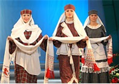
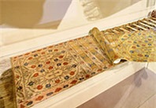
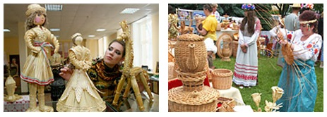
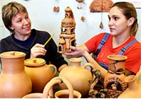

벨라루스의 기념품
천연 벨라루스 아마(Натуральный белорусский лён)(사진출처 : belarus.by)
아마천의 문양은 벨라루스의 문장에도 사용 되고있는 대표 특산물입니다.
섬유의 단단함과 풍성한 특성을 이용한 침구류와 식탁용 공예품, 의류는 물론 아이들 장난감까지 벨라루스에는 아마를 이용한 많은 공산품을 생산하고 있습니다.
아마천을 이용한 제품은 실용적인 선물로 많은 인기를 얻고 있습니다.
슬루츠키예 전통 허리장식(Слуцкие пояса)
(사진출처 : belarus.by)
독특한 벨라루스 문화의 상징으로 18세기-19세기 사이 귀족들의 허리장식으로 만들어졌습니다. 당시 실크 또는 금실을 이용하여 고급 허리장식을 만들었으며 허리장식 하나를 만드는데 2달 이상 소요되었다고 합니다. 현재는 전통방식을 되살려 기념품으로 제작하고있고 가격에 따라 실크, 금실, 아마, 면 등 다양하게 제작하여 판매하고 있습니다.
짚ㆍ버드나무가지 공예품 (Сувениры из Соломы и лозы)
(사진출처 : belarus.by)
짚 공예품은 18세기후반 벨라루스에서 만들어지기 시작했으며 현재는 전통의상을 입은 다양한 인형, 보석상자 및 장식품을 제작하여 판매하고 있습니다.
버드나무가지 공예품은 단단한 바구니 수공예품으로 인기가 많습니다.
도자기(Керамика)
(사진출처 : belarus.by)
벨라루스 전역에는 지역별로 특색있는 도자기 공예품을 만들어 내고 있습니다.
도자기를 이용하여 유제품을 신선하게 오랫동안 보관하면 왔으며, 도자기에만 담아내는 전통음식도 있습니다. 도자기를 이용한 종, 악기, 인형등이 최근에는 기념품으로 많이 판매되고 있습니다.
그 외에도 벨라루스에는 혹독한 추위를 이겨내기위해 입었던 전통의상인 양모피 모자와 장화, 크리스탈 그릇, 약초 보드카등 많은 자연물을 이용한 기념품을 전통적인 방식으로 제작하여 판매하고 있습니다.
벨라루스 여행의 추억을 전통 기념품과 함께 간직 해 보시길 바랍니다.